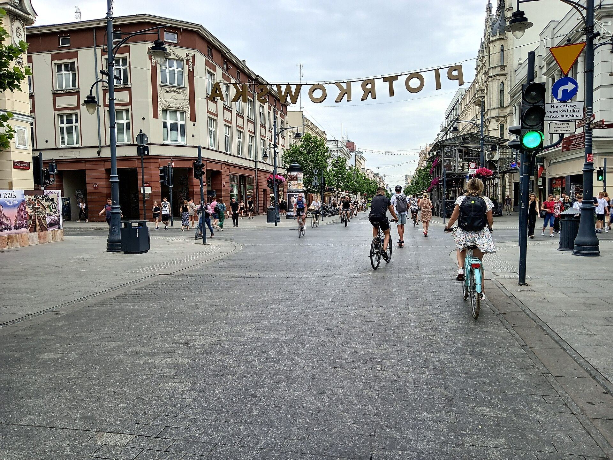
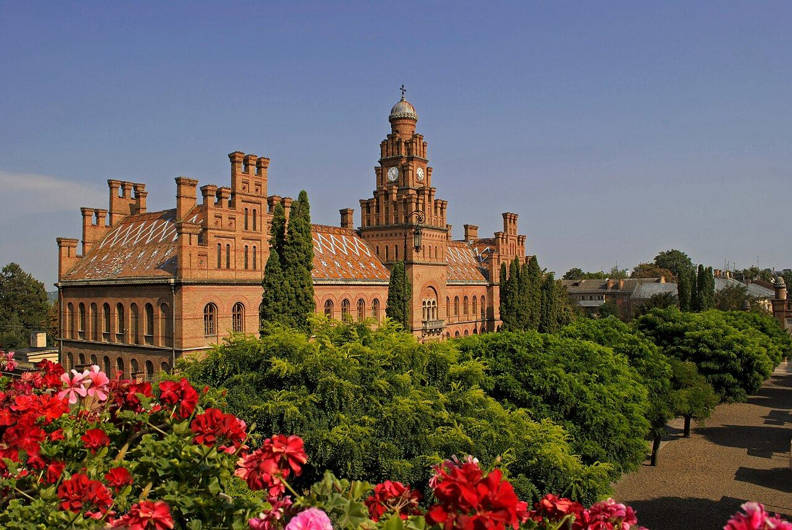
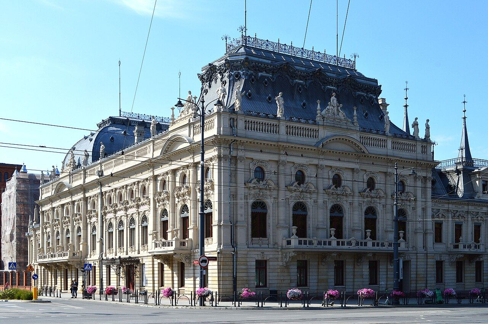
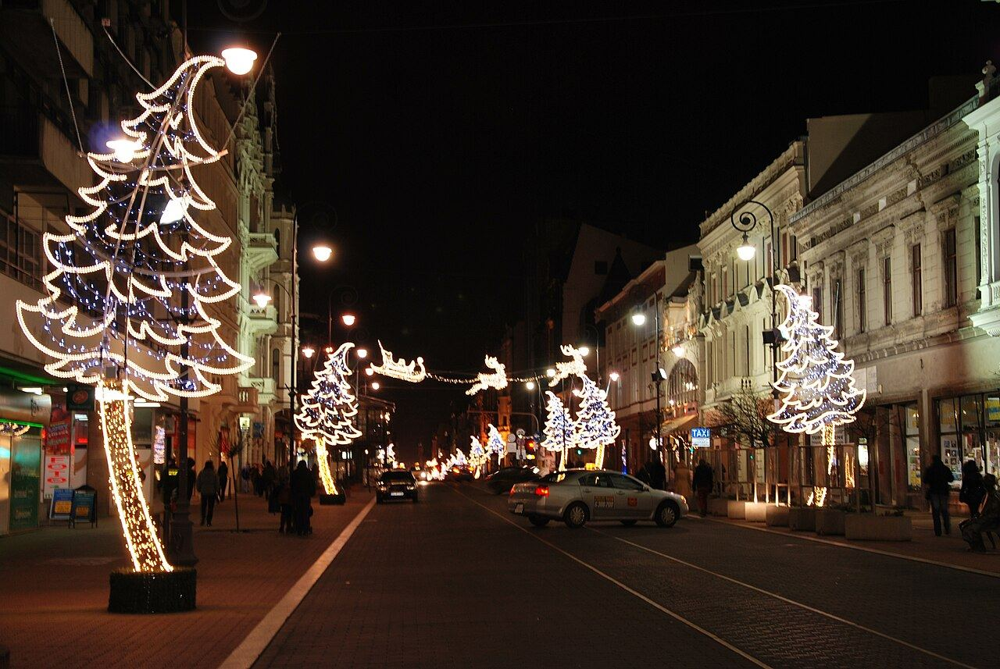
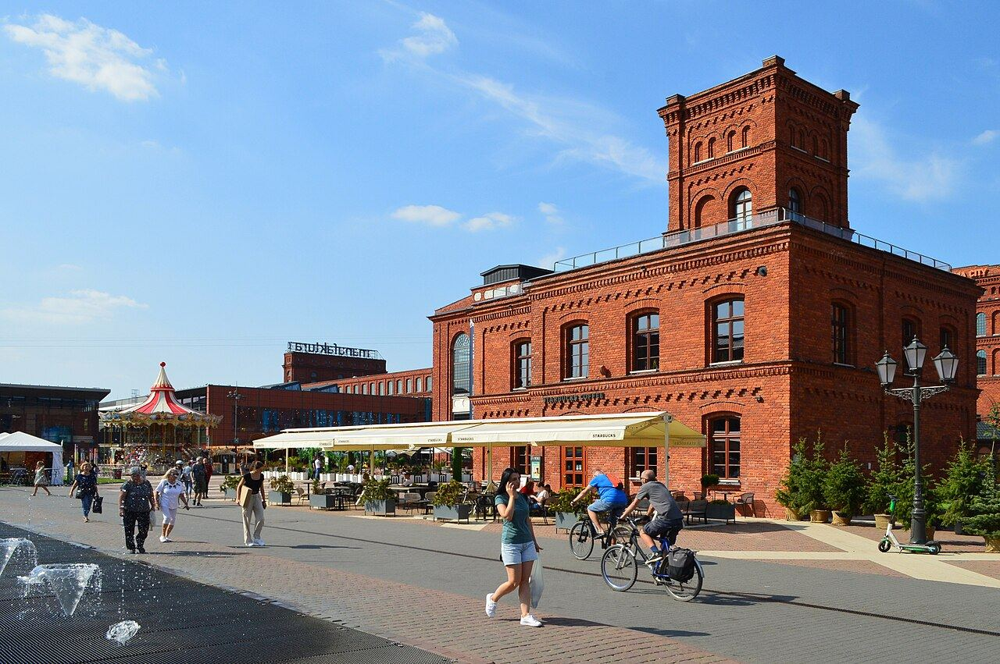
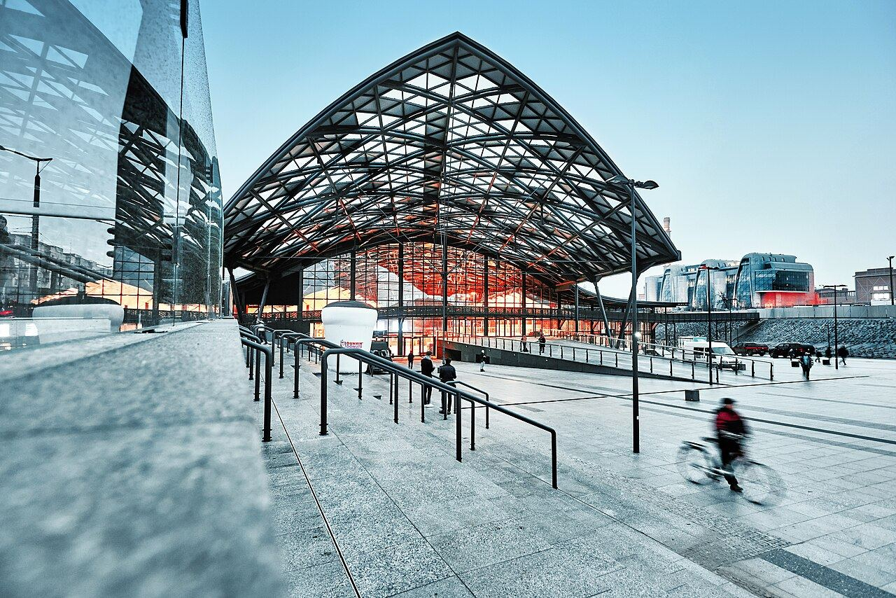

Переклади документів з печаткою присяжного перекладача, які приймають ужонд, USC, ZUS, суди, університети і роботодавці по всій Польщі.
Ціни орієнтовні, точну назву після того, як побачу документ. Сторінка присяжного перекладу рахується за 1125 знаків.
Народження, шлюб, розлучення, зміна імені. Для USC, Karta Pobytu, 800+.
Дипломи, атестати, додатки з оцінками. Для вступу, нострифікації і роботи.
Водійське посвідчення, техпаспорт, договір купівлі авто для реєстрації.
Виписки, висновки, щеплення, довідки для лікаря або ZUS.
Довіреності, рішення суду, договори, витяги з реєстрів.
У нотаріуса, в суді, ужонді, на весіллі в USC.
Більшість клієнтів жодного разу не приїжджають особисто. Усе через телефон.
Через форму на сайті, WhatsApp або email. Підійде фото з телефону.
Протягом години називаю точну ціну і термін.
Звичайно 2–3 робочі дні, терміново за 24 години.
Особисто в Лодзі або поштою чи InPost по всій Польщі.


Я українка, живу і працюю в Лодзі. Знаю, як важливо, щоб переклад документа прийняли з першого разу, без повторних візитів і нервів.
Мовою і текстом я займаюся професійно: магістратура в Чернівцях, доктор наук Лодзинського університету, а з 2022 року присяжний перекладач, внесений до реєстру Міністерства юстиції Польщі.



Присяжний переклад засвідчений печаткою і підписом перекладача з реєстру Міністерства юстиції. Лише такий переклад приймають державні установи Польщі.
Для оцінки досить фото. Для самого перекладу часто теж, але в перекладі буде позначка, що він зроблений з копії. Підкажу, що потрібно саме у вашій установі.
Так, якщо установа приймає електронні документи, переклад можна оформити з кваліфікованим електронним підписом. Підкажу, чи підійде цей варіант саме вам.
Для частини документів так. Підкажу, чи він потрібен, ще до перекладу, щоб ви не платили двічі.
Лодзь, за попереднім записом. Адресу надішлю після підтвердження.
Це демо, тексти, ціни і фото можна змінити як завгодно. Ось чому сайт працюватиме на вас щодня.
Люди шукають «tłumacz przysięgły ukraiński Łódź» і «перекладач Лодзь». Зараз вони бачать каталоги і бюро. Сайт налаштуємо так, щоб бачили вас.
Ціни, терміни, що потрібно від клієнта і як забрати переклад: усе вже написано. Вам приходять готові замовлення.
Клієнт фотографує документ і надсилає з телефону. Ви бачите, що перекладати, і одразу називаєте ціну.
Ступінь доктора, реєстр Міністерства юстиції, Чернівці і Лодзь. Людина обирає фахівця, а не найдешевше бюро.
Одна кнопка перемикає мову. Поляки і фірми, яким потрібен перекладач, теж знаходять вас.
Власний домен, хостинг на перший рік, налаштування Google. Зміни вносимо ми, вам не треба нічого вчити.
Так ваш сайт може виглядати в Google. Демо підготував Олексій, Krayon · krayon.site